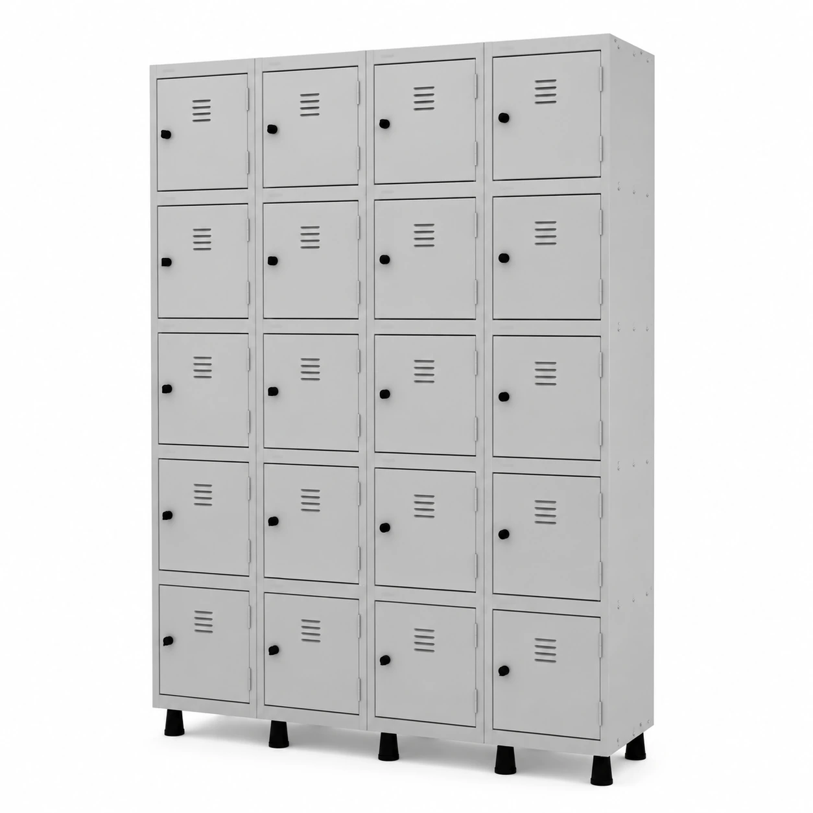
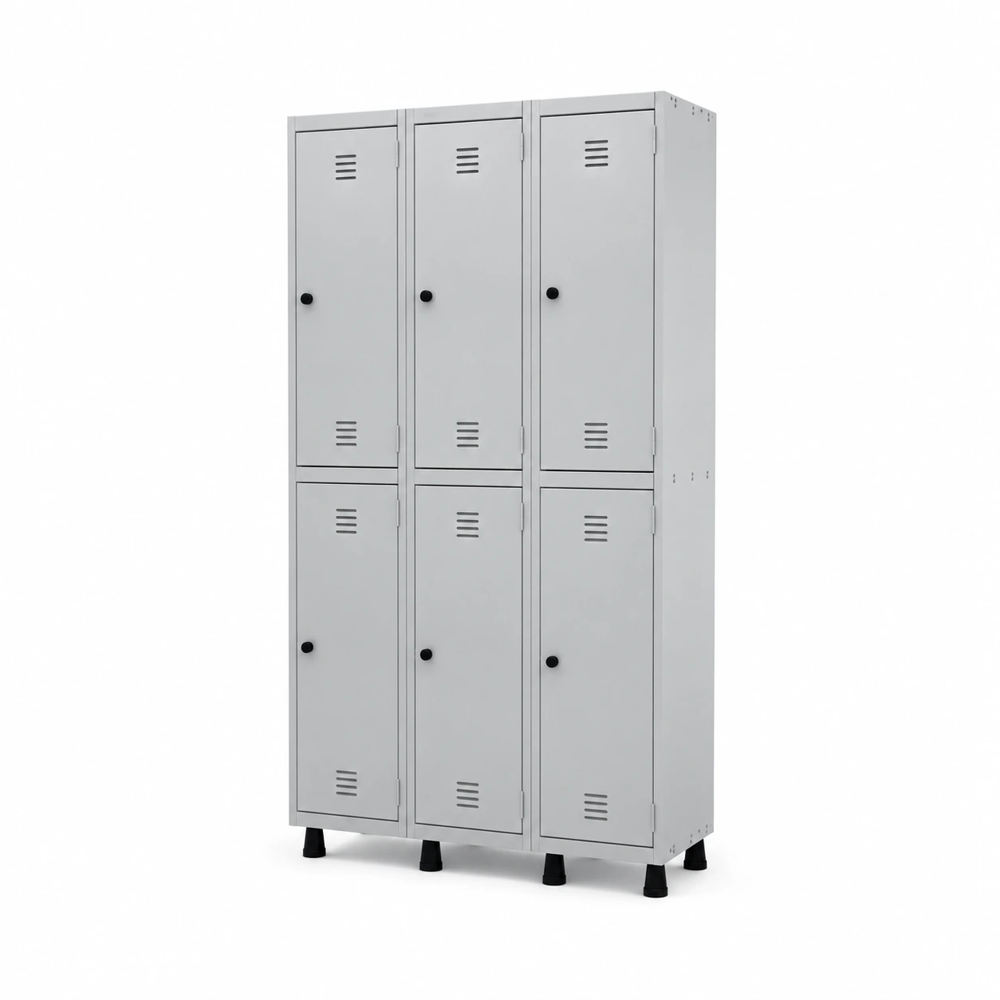
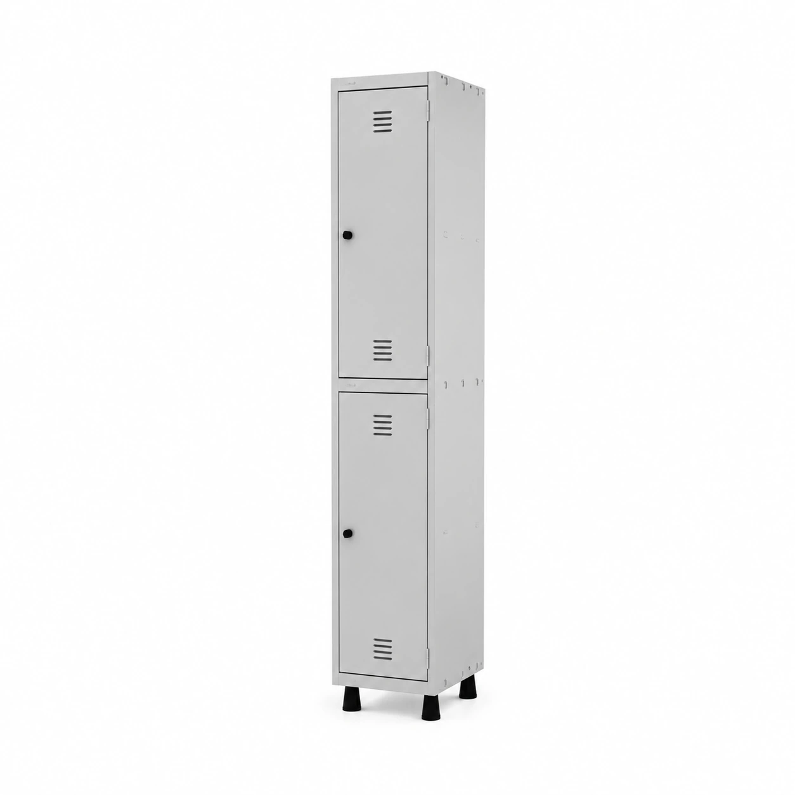

![Solicitar por e-mail](mailto:divulgamoveis@gmail.com?subject=Or%C3%A7amento%20%E2%80%94%20Arm%C3%A1rios%20de%20A%C3%A7o%20MULTIUSO%20BAIXO%20%E2%80%93%201%2C62%C3%970%2C75%C3%970%2C40m%20CZ%2FCZ%20%E2%80%93%20PANDIN%20%E2%80%93%2012005%20%E2%80%94%2012005&body=Ol%C3%A1%21%20Gostaria%20de%20um%20or%C3%A7amento%20para%3A%0AArm%C3%A1rios%20de%20A%C3%A7o%20MULTIUSO%20BAIXO%20%E2%80%93%201%2C62%C3%970%2C75%C3%970%2C40m%20CZ%2FCZ%20%E2%80%93%20PANDIN%20%E2%80%93%2012005%0AC%C3%B3digo%3A%2012005%0ADescri%C3%A7%C3%A3o%3A%20Arm%C3%A1rios%20de%20A%C3%A7o%20MULTIUSO%20BAIXO%20%E2%80%93%201%2C62%C3%970%2C75%C3%970%2C40m%20CZ%2FCZ%20%E2%80%93%2012005%20.%20Ficha%20T%C3%A9cnica%3A%20Garantia%20do%20Fornecedor%3A%2024%20Meses%20Modelo%3A%20Arm%C3%A1rio%20de%20A%C3%A7o%20MULTIUSO%20Refer%C3%AAncia%20do%20Modelo%3A%20Arm%C3%A1rio%20de%20A%C3%A7o%20MULTIUSO%20Altura%20%28cm%29%3A%20162%20Largura%20%28cm%29%3A%2075%20Profundidade%20%28cm%29%3A%2040%20Conte%C3%BAdo%20da%20Embalagem%3A%20Arm%C3%A1rio%20de%20A%C3%A7o%20c%2F%20Bandeja%20Peso%20Suportado%3A%2030%20Kg%20por%20Bandeja%20N%C3%BAmero%20de%20Bandejas%3A%2003%20Bandejas%20internas%2C%20sendo%202%20regul%C3%A1veis%20Peso%20da%20embalagem%20c%2F%20produto%20%28kg%29%3A%2030%20Total%20de%20Volumes%3A%2002%20Ambiente%3A%20Escrit%C3%B3rio%20%2F%20Dep%C3%B3sito%20e%20Outros%20Cores%20Dispon%C3%ADveis%3A%20-Cinza%2FCinza%20%28Outras%20cores%20sob%20consulta%29%20Material%20do%20Corpo%3A%20Chapa%20%2326%2F24%20Material%20das%20Bandejas%3A%20Chapa%20de%20a%C3%A7o%20com%20refor%C3%A7o%20Outros%20Recursos%20%2F%20Mais%20informa%C3%A7%C3%B5es%3A%20Sapatas%20Regul%C3%A1veis%2C%202%20portas%20com%20uma%20veneziana%20e%201%20refor%C3%A7o%20interno%20por%20porta%2C%20Totalmente%20Mont%C3%A1vel%2C%20Sistema%20inovador%20e%20Pr%C3%A1tico.%20Compos%E2%80%A6%20%28descri%C3%A7%C3%A3o%20completa%20no%20link%20do%20produto%29%0AProduto%3A%20https%3A%2F%2Fdivulgamoveis.com.br%2Fproduto%2Farmarios-de-aco-multiuso-baixo-162x075x040m-cz-cz-pandin-12005%2F%0AImagem%3A%20https%3A%2F%2Fdivulgamoveis.com.br%2Fwp-content%2Fuploads%2F2025%2F08%2F7951325414_Medidas20Multi-Uso-1024x1024.jpg-1.webp%0APor%20favor%2C%20informe%20valores%2C%20disponibilidade%20e%20condi%C3%A7%C3%B5es%20de%20entrega.){kind=link}

Ver detalhesRoupeiros de aço
Roupeiro de Aço com 20 Portas Pequenas – 1,93×1,70×0,40m – CZ/CZ – PANDIN – 10009
Código: 10009
Ver em 3D · 360°Sob consulta
Preço sob consulta
Explorar produto em 3D · 360°Consulte as opções de acabamento e disponibilidade com a equipe da Divulga. Vamos ajudar você a escolher para o seu espaço.
Sua seleção fica salva neste navegador. Envie sua consulta pelo WhatsApp ou por e-mail. As mensagens incluem os links do produto e da imagem. O e-mail abre no aplicativo configurado no seu aparelho.
A foto permanece disponível enquanto o modelo carrega.
Armários de Aço MULTIUSO BAIXO – 1,62×0,75×0,40m CZ/CZ – 12005 .
Ficha Técnica:
Garantia do Fornecedor: 24 Meses
Modelo: Armário de Aço MULTIUSO
Referência do Modelo: Armário de Aço MULTIUSO
Altura (cm): 162
Largura (cm): 75
Profundidade (cm): 40
Conteúdo da Embalagem: Armário de Aço c/ Bandeja
Peso Suportado: 30 Kg por Bandeja
Número de Bandejas: 03 Bandejas internas, sendo 2 reguláveis
Peso da embalagem c/ produto (kg): 30
Total de Volumes: 02
Ambiente: Escritório / Depósito e Outros
Cores Disponíveis:
-Cinza/Cinza (Outras cores sob consulta)
Material do Corpo: Chapa #26/24
Material das Bandejas: Chapa de aço com reforço
Outros Recursos / Mais informações: Sapatas Reguláveis, 2 portas com uma veneziana e 1 reforço interno por porta, Totalmente Montável, Sistema inovador e Prático.
Composição: Armário de Aço / Bandeja de Aço.
Marca: Divulga Móveis
Material da Estrutura: Corpo em Chapa de Aço
Corpo (Material): Corpo em Chapa de Aço Reforçado
Número de Bandejas: 03
– Produto é enviado desmontado (não realizamos a montagem)
A Transportadora não se responsabiliza, no ato da entrega, por subir escadas/elevadores ou transporte por guincho em apartamentos. Eventuais despesas são de responsabilidade do comprador. Confira as dimensões deste produto e certifique-se de que passará normalmente por supostos elevadores, portas, escadas e/ou corredores. Para mais informações, acesse nossa Central de Atendimento.
Instruções de Limpeza:
Passar um pano levemente umedecido com água ou detergente neutro e em seguida um pano seco para as limpezas do dia a dia.
Nunca use produtos abrasivos, como saponáceos, esponja de aço, escova com cerdas duras, entre outros.
Instruções de Conservação:
Evitar expor/utilizar os produtos em ambientes com alta umidade, exemplo: câmaras frias, saunas e áreas molhadas.
Não armazenar produtos corrosivos, exemplo: ácido, cloro etc.
Armários de Aço MULTIUSO BAIXO – 1,62×0,75×0,40m CZ/CZ – 12005 .
Cód: 12005

Ver detalhesCódigo: 10009
Ver em 3D · 360° Ver detalhes
Ver detalhes
Código: 10004
Ver em 3D · 360°
Ver detalhesCódigo: 0003
Ver em 3D · 360°
Ver detalhesCódigo: 10002
Segunda a sexta: 8h às 18h
Sábado: 8h às 12h
![Solicitar por e-mail](mailto:divulgamoveis@gmail.com?subject=Or%C3%A7amento%20%E2%80%94%20Roupeiro%20de%20A%C3%A7o%20com%2020%20Portas%20Pequenas%20%E2%80%93%201%2C93%C3%971%2C70%C3%970%2C40m%20%E2%80%93%20CZ%2FCZ%20%E2%80%93%20PANDIN%20%E2%80%93%2010009%20%E2%80%94%2010009&body=Ol%C3%A1%21%20Gostaria%20de%20um%20or%C3%A7amento%20para%3A%0ARoupeiro%20de%20A%C3%A7o%20com%2020%20Portas%20Pequenas%20%E2%80%93%201%2C93%C3%971%2C70%C3%970%2C40m%20%E2%80%93%20CZ%2FCZ%20%E2%80%93%20PANDIN%20%E2%80%93%2010009%0AC%C3%B3digo%3A%2010009%0ADescri%C3%A7%C3%A3o%3A%20Roupeiro%20de%20A%C3%A7o%20com%2020%20Portas%20Pequenas%20%E2%80%93%201%2C93%C3%971%2C38%C3%970%2C40m%20%E2%80%93%20CZ%2FCZ%2010009%20Descri%C3%A7%C3%A3o%20do%20Produto%3A%20Garantia%20do%20Fornecedor%3A%2024%20Meses%20Modelo%3A%20Roupeiro%20de%20A%C3%A7o%20Roupeiro%20de%20A%C3%A7o%2020%20Portas%20Pequenas%20Cinza%20%E2%80%93%20Arm%C3%A1rio%20para%20vesti%C3%A1rio%20Estrutura%20chapas%20%2322%20e%20%2326.%2020%20Portas%20Pequenas%20com%201%20veneziana%20para%20ventila%C3%A7%C3%A3o%20e%201%20refor%C3%A7o%20interno%20por%20porta.%20Sistema%20de%20fechamento%20c%2F%20Trava%20p%2F%20Cadeado%20Capacidade%20por%20prateleira%2015kg%20%28bem%20distribu%C3%ADdos%29.%20Dimens%C3%B5es%3A%20Altura%3A%201%2C93%20m%2C%20Largura%3A%201%2C70%20m%2C%20Profundidade%3A%200%2C40%20m%2C%20Peso%3A%2080%20kg.%20Refer%C3%AAncia%20do%20Modelo%3A%20GRP501%2F5%20%23%2003%20CP501%2F5%20Conte%C3%BAdo%20da%20Embalagem%3A%20Roupeiro%20de%20A%C3%A7o%20c%2F%2020%20Portas%20Pequenas%20%2F%20Kit%20de%20Portas%20Pequenas%20Tranca%3A%20Pit%C3%A3o%20p%2F%20Cadeado%20%28Cadeado%20n%C3%A3o%20Incluso%29%20N%C3%BAmero%20de%20Portas%3A%2020%20Peso%20da%20embalagem%20c%2F%20produto%20%28kg%29%3A%2020%20Total%20de%20Volumes%3A%2008%20Ambiente%3A%20Escrit%C3%B3rio%20Cores%20Dispon%C3%ADveis%3A%20-Cinz%E2%80%A6%20%28descri%C3%A7%C3%A3o%20completa%20no%20link%20do%20produto%29%0AProduto%3A%20https%3A%2F%2Fdivulgamoveis.com.br%2Fproduto%2Froupeiro-de-aco-com-20-portas-pequenas-193x170x040m-cz-cz-pandin-10009%2F%0AImagem%3A%20https%3A%2F%2Fdivulgamoveis.com.br%2Fwp-content%2Fuploads%2F2025%2F08%2F9778092873_dfa41c976153d463c5f2cc657084f6cf-1024x1024.jpg.webp%0APor%20favor%2C%20informe%20valores%2C%20disponibilidade%20e%20condi%C3%A7%C3%B5es%20de%20entrega.){kind=link}
![Solicitar por e-mail](mailto:divulgamoveis@gmail.com?subject=Or%C3%A7amento%20%E2%80%94%20Roupeiro%20de%20A%C3%A7o%20c%2008%20PORTAS%20GRANDES%20%E2%80%93%201%2C93%C3%971%2C38%C3%970%2C40m%20%E2%80%93%20CZCZ%20%E2%80%93%20PANDIN%20%E2%80%93%2010004%20%E2%80%94%2010004&body=Ol%C3%A1%21%20Gostaria%20de%20um%20or%C3%A7amento%20para%3A%0ARoupeiro%20de%20A%C3%A7o%20c%2008%20PORTAS%20GRANDES%20%E2%80%93%201%2C93%C3%971%2C38%C3%970%2C40m%20%E2%80%93%20CZCZ%20%E2%80%93%20PANDIN%20%E2%80%93%2010004%0AC%C3%B3digo%3A%2010004%0ADescri%C3%A7%C3%A3o%3A%20Roupeiro%20de%20A%C3%A7o%20c%2F%2008%20Portas%20Grandes%20%E2%80%93%201%2C93%C3%971%2C38%C3%970%2C40m%20%E2%80%93%20CZ%2FCZ%2010004%20Descri%C3%A7%C3%A3o%20do%20Produto%3A%20Garantia%20do%20Fornecedor%3A%2024%20Meses%20Modelo%3A%20Roupeiro%20de%20A%C3%A7o%20Roupeiro%20de%20A%C3%A7o%2008%20Portas%20Grandes%20Cinza%20%E2%80%93%20Arm%C3%A1rio%20para%20vesti%C3%A1rio%20Estrutura%20chapas%20%2322%20e%20%2326.%2008%20Portas%20Grandes%20com%201%20veneziana%20para%20ventila%C3%A7%C3%A3o%20e%201%20refor%C3%A7o%20interno%20por%20porta.%20Sistema%20de%20fechamento%20c%2F%20Trava%20p%2F%20Cadeado%20Capacidade%20por%20prateleira%2015kg%20%28bem%20distribu%C3%ADdos%29.%20Dimens%C3%B5es%3A%20Altura%3A%201%2C96%20m%2C%20Largura%3A%201%2C38%20m%2C%20Profundidade%3A%200%2C40%20m%2C%20Peso%3A%2080%20kg.%20Refer%C3%AAncia%20do%20Modelo%3A%20GRP501%2F2%20%3B%2003%20CP501%2F2%20Conte%C3%BAdo%20da%20Embalagem%3A%20Roupeiro%20de%20A%C3%A7o%20c%2F%2008%20Portas%20Grandes%20%2F%20Kit%20de%20PORTAS%20GRANDES%20Tranca%3A%20Pit%C3%A3o%20p%2F%20Cadeado%20%28Cadeado%20n%C3%A3o%20Incluso%29%20N%C3%BAmero%20de%20Portas%3A%2008%20%28Medida%20da%20Porta%3A%200%2C30%C3%970%2C85m%29%20Peso%20da%20embalagem%20c%2F%20produto%20%28kg%29%3A%2020%20Total%20de%20Volumes%3A%2008%20Ambiente%3A%20Escrit%C3%B3rio%20%E2%80%A6%20%28descri%C3%A7%C3%A3o%20completa%20no%20link%20do%20produto%29%0AProduto%3A%20https%3A%2F%2Fdivulgamoveis.com.br%2Fproduto%2Froupeiro-de-aco-c-08-portas-grandes-193x138x040m-czcz-pandin-10004%2F%0AImagem%3A%20https%3A%2F%2Fdivulgamoveis.com.br%2Fwp-content%2Fuploads%2F2025%2F08%2F9874058993_10004221212121.jpg%0APor%20favor%2C%20informe%20valores%2C%20disponibilidade%20e%20condi%C3%A7%C3%B5es%20de%20entrega.){kind=link}
![Solicitar por e-mail](mailto:divulgamoveis@gmail.com?subject=Or%C3%A7amento%20%E2%80%94%20Roupeiro%20de%20A%C3%A7o%20c%2006%20PORTAS%20GRANDES%20%E2%80%93%201%2C93%C3%971%2C03%C3%970%2C40m%20%E2%80%93%20CZCZ%20%E2%80%93%20PANDIN%20%E2%80%93%200003%20%E2%80%94%200003&body=Ol%C3%A1%21%20Gostaria%20de%20um%20or%C3%A7amento%20para%3A%0ARoupeiro%20de%20A%C3%A7o%20c%2006%20PORTAS%20GRANDES%20%E2%80%93%201%2C93%C3%971%2C03%C3%970%2C40m%20%E2%80%93%20CZCZ%20%E2%80%93%20PANDIN%20%E2%80%93%200003%0AC%C3%B3digo%3A%200003%0ADescri%C3%A7%C3%A3o%3A%20Roupeiro%20de%20A%C3%A7o%20c%2F%2006%20Portas%20Grandes%20%E2%80%93%201%2C93%C3%971%2C03%C3%970%2C40m%20%E2%80%93%20CZ%2FCZ%2010003%20Descri%C3%A7%C3%A3o%20do%20Produto%3A%20Garantia%20do%20Fornecedor%3A%2024%20Meses%20Modelo%3A%20Roupeiro%20de%20A%C3%A7o%20Roupeiro%20de%20A%C3%A7o%2006%20Portas%20Grandes%20Cinza%20%E2%80%93%20Arm%C3%A1rio%20para%20vesti%C3%A1rio%20Estrutura%20chapas%20%2322%20e%20%2326.%2006%20Portas%20Grandes%20com%201%20veneziana%20para%20ventila%C3%A7%C3%A3o%20e%201%20refor%C3%A7o%20interno%20por%20porta.%20Sistema%20de%20fechamento%20c%2F%20Trava%20p%2F%20Cadeado%20Capacidade%20por%20prateleira%2015kg%20%28bem%20distribu%C3%ADdos%29.%20Dimens%C3%B5es%3A%20Altura%3A%201%2C96%20m%2C%20Largura%3A%201%2C03%20m%2C%20Profundidade%3A%200%2C36%20m%2C%20Peso%3A%2060%20kg.%20Refer%C3%AAncia%20do%20Modelo%3A%20GRP501%2F2%20%3B%2002%20CP501%2F2%20Conte%C3%BAdo%20da%20Embalagem%3A%20Roupeiro%20de%20A%C3%A7o%20c%2F%2006%20Portas%20Grandes%20%2F%20Kit%20de%20PORTAS%20GRANDES%20Tranca%3A%20Pit%C3%A3o%20p%2F%20Cadeado%20%28Cadeado%20n%C3%A3o%20Incluso%29%20N%C3%BAmero%20de%20Portas%3A%2006%20%28Medida%20da%20Porta%3A%200%2C30%C3%970%2C85m%29%20Peso%20da%20embalagem%20c%2F%20produto%20%28kg%29%3A%2020%20Total%20de%20Volumes%3A%2006%20Ambiente%3A%20Escrit%C3%B3rio%20%E2%80%A6%20%28descri%C3%A7%C3%A3o%20completa%20no%20link%20do%20produto%29%0AProduto%3A%20https%3A%2F%2Fdivulgamoveis.com.br%2Fproduto%2Froupeiro-de-aco-c-06-portas-grandes-193x103x040m-czcz-pandin-0003%2F%0AImagem%3A%20https%3A%2F%2Fdivulgamoveis.com.br%2Fwp-content%2Fuploads%2F2025%2F08%2FDesenho-sem-titulo-6.jpg%0APor%20favor%2C%20informe%20valores%2C%20disponibilidade%20e%20condi%C3%A7%C3%B5es%20de%20entrega.){kind=link}
![Solicitar por e-mail](mailto:divulgamoveis@gmail.com?subject=Or%C3%A7amento%20%E2%80%94%20Roupeiro%20de%20A%C3%A7o%20com%2004%20PORTAS%20GRANDES%20%E2%80%93%201%2C93%C3%970%2C69%C3%970%2C40m%20%E2%80%93%20CZ%2FCZ%20%E2%80%93%20PANDIN%20%E2%80%93%2010002%20%E2%80%94%2010002&body=Ol%C3%A1%21%20Gostaria%20de%20um%20or%C3%A7amento%20para%3A%0ARoupeiro%20de%20A%C3%A7o%20com%2004%20PORTAS%20GRANDES%20%E2%80%93%201%2C93%C3%970%2C69%C3%970%2C40m%20%E2%80%93%20CZ%2FCZ%20%E2%80%93%20PANDIN%20%E2%80%93%2010002%0AC%C3%B3digo%3A%2010002%0ADescri%C3%A7%C3%A3o%3A%20Roupeiro%20de%20A%C3%A7o%20com%2004%20Portas%20Grande%20%E2%80%93%201%2C93%C3%970%2C69%C3%970%2C40m%20%E2%80%93%20CZ%2FCZ%2010002%20Descri%C3%A7%C3%A3o%20do%20Produto%3A%20Garantia%20do%20Fornecedor%3A%2024%20Meses%20Modelo%3A%20Roupeiro%20de%20A%C3%A7o%20Roupeiro%20de%20A%C3%A7o%2004%20Portas%20Grande%20Cinza%20%E2%80%93%20Arm%C3%A1rio%20para%20vesti%C3%A1rio%20Estrutura%20chapas%20%2322%20e%20%2326.%2004%20Portas%20Grande%20com%201%20veneziana%20para%20ventila%C3%A7%C3%A3o%20e%201%20refor%C3%A7o%20interno%20por%20porta.%20Sistema%20de%20fechamento%20c%2F%20Trava%20p%2F%20Cadeado%20Capacidade%20por%20prateleira%2015kg%20%28bem%20distribu%C3%ADdos%29.%20Dimens%C3%B5es%3A%20Altura%3A%201%2C96%20m%2C%20Largura%3A%200%2C69%20m%2C%20Profundidade%3A%200%2C36%20m%2C%20Peso%3A%2040%20kg.%20Refer%C3%AAncia%20do%20Modelo%3A%20GRP501%2F2%20CP501%2F2%20Conte%C3%BAdo%20da%20Embalagem%3A%20Roupeiro%20de%20A%C3%A7o%20c%2F%2004%20Portas%20Grande%20%2F%20Kit%20de%20PORTAS%20GRANDES%20Tranca%3A%20Pit%C3%A3o%20p%2F%20Cadeado%20%28Cadeado%20n%C3%A3o%20Incluso%29%20N%C3%BAmero%20de%20Portas%3A%2004%20%28Medida%20da%20Porta%3A%200%2C30%C3%970%2C85m%29%20Peso%20da%20embalagem%20c%2F%20produto%20%28kg%29%3A%2020%20Total%20de%20Volumes%3A%2002%20Ambiente%3A%20Escrit%C3%B3rio%20Cores%20Di%E2%80%A6%20%28descri%C3%A7%C3%A3o%20completa%20no%20link%20do%20produto%29%0AProduto%3A%20https%3A%2F%2Fdivulgamoveis.com.br%2Fproduto%2Froupeiro-de-aco-com-04-portas-grandes-193x069x040m-cz-cz-pandin-10002%2F%0AImagem%3A%20https%3A%2F%2Fdivulgamoveis.com.br%2Fwp-content%2Fuploads%2F2025%2F08%2F7879197079_roup-02PG-1280x1280-1-1.jpg%0APor%20favor%2C%20informe%20valores%2C%20disponibilidade%20e%20condi%C3%A7%C3%B5es%20de%20entrega.){kind=link}